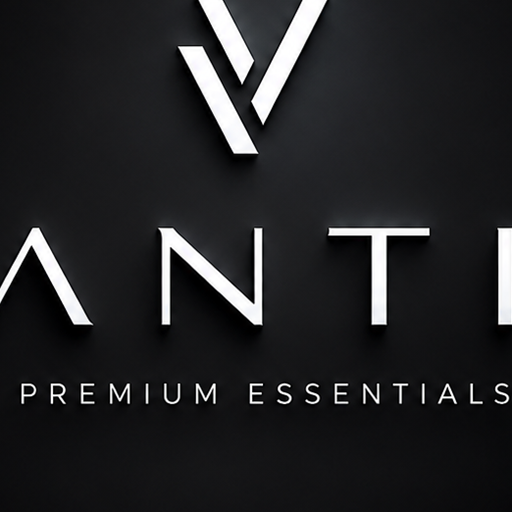

Aura
Premium quality. Timeless design.
VANTIA no parte como tienda masiva. Parte con una prenda precisa y una dirección clara: un canguro premium con chiporro suave por dentro, en tonos neutros fáciles de repetir.
Día del Padre · Chile
Chiporro por dentro,
abrigo real y bolsillo canguro.
El regalo perfecto para papá
Lanzamiento: 1 x $13.990 · 2 x $21.990 · 3 x $29.990.
Escríbenos con color, talla
y comuna.
Chiporro suave por dentro para máximo abrigo en días fríos, bolsillo canguro y un calce cómodo en paleta neutra. Una pieza precisa pensada para regalar a papá y que use todos los días con jeans, cargo o pantalón recto.
Aura
VANTIA no parte como tienda masiva. Parte con una prenda precisa y una dirección clara: un canguro premium con chiporro suave por dentro, en tonos neutros fáciles de repetir.
Máxima comodidad para días fríos. Un canguro premium hecho para abrigar de verdad, con detalles que se notan al usarlo.
Tela de buen cuerpo y tacto agradable para usar todo el día.
Chiporro interior que retiene el calor en los días más fríos.
Forro borrega suave por dentro, en el cuerpo y la capucha.
Bolsillo frontal amplio, práctico para las manos y el día a día.
Guía de tallas · medidas en cm
| Talla | Ancho pecho | Largo total | Manga |
|---|---|---|---|
| S | 54 cm | 68 cm | 62 cm |
| M | 57 cm | 70 cm | 63 cm |
| L | 60 cm | 72 cm | 64 cm |
| XL | 63 cm | 74 cm | 65 cm |
Medidas aproximadas de la prenda plana (±2 cm). El ancho de pecho se mide de costura a costura. ¿Dudas con la talla? Escríbenos tu estatura y peso por WhatsApp y te orientamos antes de reservar.
Gris claro
Gris oscuro
Negro
Café oscuro
Despues

VANTIA trabaja el poleron canguro premium con chiporro por dentro para quienes buscan abrigo real, comodidad y tonos neutros fáciles de combinar. El forro suave retiene el calor en días fríos y el bolsillo canguro suma practicidad para el uso diario. El regalo perfecto para papá este Día del Padre.
Compra simple
Escríbenos por WhatsApp o Instagram.
Indica color, talla (S/M/L/XL) y comuna.
Confirmamos stock y coordinamos pago y envío.
Envíos a domicilio con recargo según dirección · Envíos a regiones disponibles · Región Metropolitana.
Reservar talla por WhatsAppTiene chiporro suave por dentro para máximo abrigo, bolsillo canguro y un calce cómodo en tonos neutros fáciles de combinar.
Disponible en S, M, L y XL. Si tienes dudas, escríbenos tu estatura y cómo te gusta el calce y te orientamos antes de reservar.
Sí. Puedes combinar colores en los packs de 2 x $21.990 o 3 x $29.990 CLP según stock disponible durante el lanzamiento.
Sí. Envíos a domicilio con recargo según dirección y envíos a regiones disponibles. Te confirmamos valor y tiempo por DM antes de cerrar el pedido.